Table of contents |
Author: Johannes Buchner Homepage: http://astrost.at/istics/ Further information: Exploring the AGN obscurer geometry with NuSTAR Compton humpsAbstract: 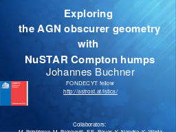 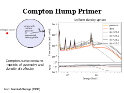 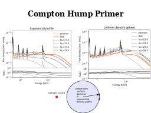 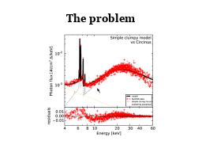 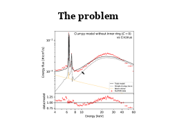 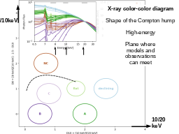 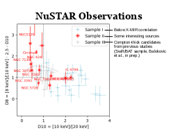 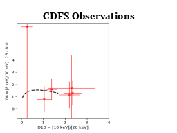 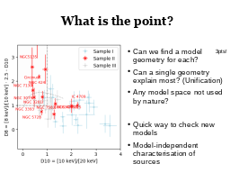 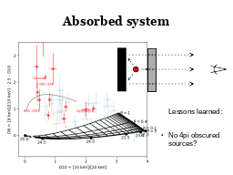 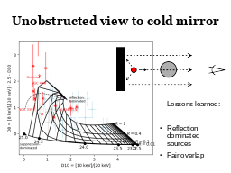 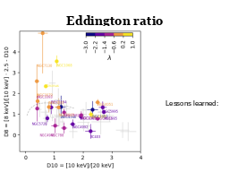 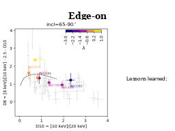 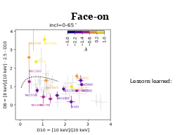 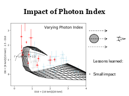 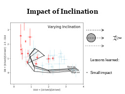 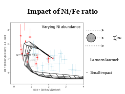 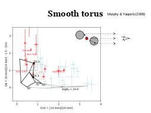 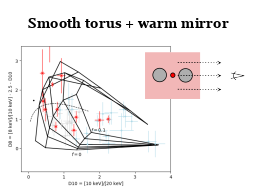 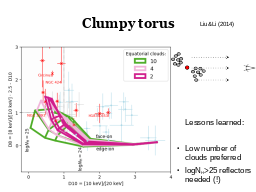 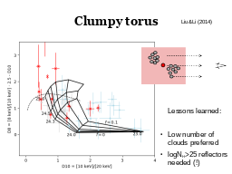 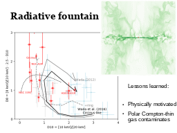 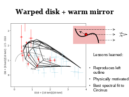 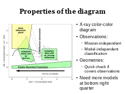 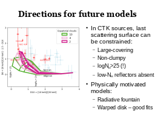 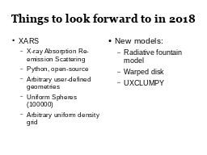 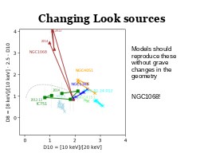 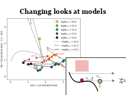 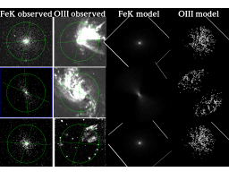 |